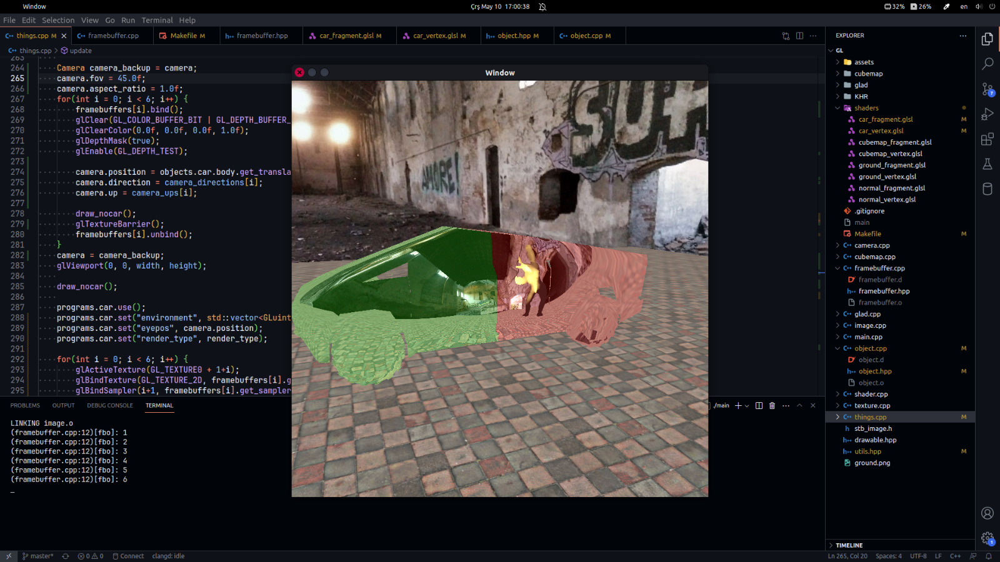

Hello, everybody! Welcome to my blog post on my homework for CENG469 course.
First of all, I consider myself a lot luckier compared to the first homework in the second one. Almost everything works this time and most probably, without any issue in ineks!
I haven't been able to do the correct framebuffer renders. I don't know the exact reason, but all the renders are done "zoomed". This makes reflections a bit, umm, weird.
The reflections look weird and there are very noticable transitions between the framebuffers.
Changing the FoV of the camera mostly did not work. For the homework, I used 45 degrees, which should have been right since this would mean the camera renders a face of the cube. I also used 90 degrees and 60 degrees. 90 degrees was a bit too "Quake"ish whereas 60 degrees just flipped the whole image!
Other than that, the program more-or-less works fine.
I have not done interesting design choices this time. After "smart" optimizations bit me in the first homework by not working correctly and even breaking on ineks, I decided to follow the lecture slides and online tutorials properly this time. I rewrote all the VBO and shader program handler classes by myself by really understanding what is going on. The VBO handling I have used before was something like a patch to save the day. This time however, it was properly working so that I can finally use multiple meshes. Getting used to the usual OpenGL flow of generating, binding etc. was also very helpful for other kinds of data like textures and framebuffers.
I used some static methods in order to help creating different kinds of objects. Even though most of the objects have been parsed from .obj files, the object onto which I mapped the cubemap was just a cube with handmade vertices and face ids. Before switching to cybertruck, I also used a different and much simpler object as car, which was two cut pyramids that connect with the other at the bigger base. Framebuffers are also their own objects which store own textures and samplers. However, the static cubemap was a different object itself with the cube being seperate.
When I was doing the static cubemap, I came across an interesting error. Out of memory errors are pretty rare errors these days, especially on modern computers where we have gigabytes of RAM and smart operating systems that utilize swap or page files. And honestly, I did not expect a homework to give out of memory error. However, it happened. When I downloaded 8192x8192 cubemap textures and tried to load them, the program threw out of memory error! Even though the total of those textures are about 1.5GB, my GPU should have been able to handle 8GBs of data by expanding its used shared RAM.
After reverting to 4096x4096 textures, I got my first cubemap render.
At that time, the controls have been pretty sluggish due to directly using them. After searching the internet a bit, I came across the information that in most programs, the pressed keys are saved to an array since the input sampling rate of the OS and/or GUI library is usually very low compared to the possible FPS of the program. I however did a little trick and used an std::unordered_set instead of an array. The key codes in GLFW may be bigger than hundreds, whereas a normal keyboard usually only supports some more than a dozen keys pressed simultaneously. Hence, allocating for every key is not that feasible. Sets on the other hand may be much more memory efficient while retaining the O(1) access time complexity. The method I used to erase released keys caused some segfaults on the way, but it should be mostly fixed. The program sometimes gives segfaults but I haven't been able to catch the reason. It may be due to insufficient space for buffers since I don't free the space I used after terminating and the OS may free space some time after my program terminates, so that multiple consequential executions may cause insufficient memory space for something I allocate and allocations returning NULL etc.
Framebuffer was a headache. I could not bind, and tracing the error was very cumbersome. Just getting an invalid operation error from an unrelated function (shader binding in my case) is very bad. Then I used my check_gl function in almost every line about the framebuffers. After finding the function responsible for the error, I searched the internet for the usage of this function. Unfortunately, other people's errors were unrelatable to mine. Then, I thought about just looking at the documentation to check under which conditions this function can throw error. When I saw the sentence
GL_INVALID_OPERATION is generated by all commands accepting a target parameter if zero is bound to that target.I found out that binding the framebuffer before binding its textures is needed. As the unbinding is done in reverse order, I thought that the binding was the same, for some reason. Just moving a line two lines up was enough to get first framebuffer render:
Here is my check_gl function. It is not an engineering marvel, but it is pretty nice in my opinion.
static void check_gl(const std::string context) {
int status = glGetError();
if(status != GL_NO_ERROR) {
throw std::runtime_error(context + " Error: " + error_names[status]);
}
}
#define check_gl(ctx) check_gl("(" + std::string(__FILE__) + ":" + std::to_string(__LINE__) + ") " + ctx)
The macro makes it so that the file and the line the check is done is also given in the context string. This made it possible to copy pasting check_gls with same contexes, and then differentiating them in the output by file and line.
On top of that I wasn't been able to bind a cubemap texture so that I used some dirty tricks to sample in the fragment shader. Here is my fragment shader for dynamic cube map:
vec3 ray = reflect(vertex_position - eyepos, normalize(vertex_normal));
vec3 abs_ray = abs(ray);
int selected_face = POSX;
vec2 uv;
bool neg = false;
if(abs_ray.x >= abs_ray.y && abs_ray.x >= abs_ray.z) {
selected_face = POSX;
if(ray.x < 0) {
neg = true;
}
ray /= ray.x;
ray = (ray/2.0) + vec3(0.5f, 0.5f, 0.5f);
uv = ray.zy;
if(neg) {
uv.y = 1.0f-uv.y;
}
} else if(abs_ray.y >= abs_ray.x && abs_ray.y >= abs_ray.z) {
selected_face = POSY;
if(ray.y < 0) {
neg = true;
}
ray /= ray.y;
ray = (ray/2.0) + vec3(0.5f, 0.5f, 0.5f);
uv = ray.xz;
if(neg) {
uv.y = 1.0f - uv.y;
}
} else if(abs_ray.z >= abs_ray.x && abs_ray.z >= abs_ray.y) {
selected_face = POSZ;
if(ray.z < 0) {
neg = true;
}
ray /= ray.z;
ray = (ray/2.0) + vec3(0.5f, 0.5f, 0.5f);
uv = ray.xy;
uv = vec2(1.0f, 1.0f) - uv;
if(!neg) {
uv.y = 1.0f - uv.y;
}
}
if(neg) {
selected_face += 1;
}
if(render_type == 0) {
frag_color = texture(environment[selected_face], uv);
} else if(render_type == 1) {
frag_color = vec4(uv, 1.0f, 1.0f);
} else {
frag_color = texture(environment[selected_face], uv);
}
vec4 original_pos = inverse(model) * vec4(vertex_position, 1.0f);
if(part == 0) {
frag_color += vec4(0.0f, 0.2f, 0.0f, 0.0f);
} else if(part == 1) {
frag_color += vec4(0.0f, 0.0f, 0.2f, 0.0f);
} else {
frag_color = vec4(0.05f, 0.05f, 0.05f, 1.0f);
}
The component of the eye-to-fragment-position ray and its sign gives us the face we need to sample from. For example if x is positive and its absolute value is the biggest among the other components' absolute values, then we need to sample from positive-x face. If we make the x component exactly 1 (ray /= ray.x etc in the code), we can use the y and z as texture coordinates. However, they are between -1 and 1 now. We just compress them into [0,1] range with "(ray/2.0) + vec3(0.5f, 0.5f, 0.5f)". Now, the y and z components are the uv coordinates. We can do similar things for other faces. However, this rendering is not right, it is sometimes mirrored and sometimes rotated. I fixed them by observing the results of each face. The cubemap I used has pretty distinctive and asymmetric parts, which helped me a lot in this fix. Note that this fragment shader is very slow compared to a correct cubemap. Branches in GPUs are pretty bad after all.
Unfortunately, this was not enough. The textures are rendered pretty much "zoomed" which I said at the start.
Adding reflection was pretty easy after mapping rays to uv coordinates.
Here are some refraction examples:
As we can see, there are not too much differences between them. The dynamic cubemap being wrong is also a reason why we cannot see the difference clearly.